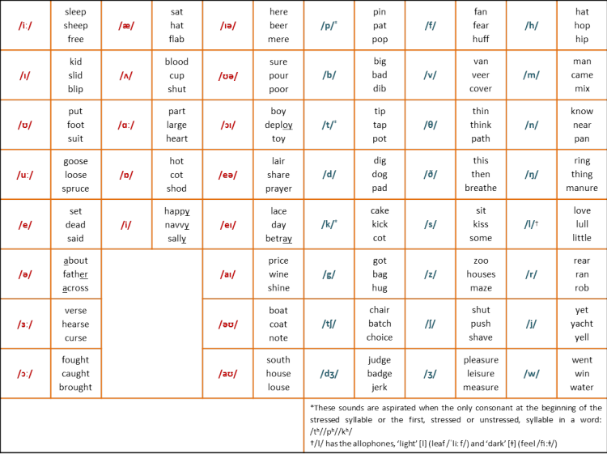
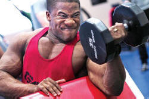

TKT Module 1: Describing language and language skills
Phonology

This is not a course in transcribing sounds using the phonemic
alphabet but if you want to learn how to do this, there is
a short course in transcription on this site.
In the TKT examination, there is a test of your ability to recognise
(not write)
phonemic transcriptions.
 |
What is phonology? |
Phonology is the study of the sounds of a language, in this case,
English. (It is sometimes called phonemics but we'll stay with
phonology here.)
We are not concerned with the study of the sounds of all languages,
that is the domain of the science of phonetics. In this guide,
we will look at some of the most important aspects of phonology and
pronunciation and base it all on English.
 |
Key concepts in this guideBy the end of this guide, you should be able to understand and use these key concepts: |
Look out for these words like this
in the text.
There will be tests at the end of the guide for you to check that
you understand the ideas.
 |
The phoneme |
A phoneme is the smallest unit of sound in a language which makes a difference to meaning.
- Phonemes
- Allophones
In English, there are two ways to make the sound represented by the letter p. We can make the sound as in spin and we can make it as in pin.
In the first example, spin, no air is pushed out after the p so it is represented as /p/.
In the second example, pin, we push out a small amount of air after the sound so it is represented as /ph/.
If you hold a thin piece of paper in front of your mouth when saying the words, it will move only (or more) on the aspirated sound in pin. Even if you exchange the sounds and use /p/ in pin and /ph/ in spin, you will not make a different word. You may sound a little strange but you will not be misunderstood.
The two ways of producing a sound which do not make a difference to meaning are called allophones.
In other languages, adding the aspiration (breathing out) to a sound will make a difference in meaning. In Icelandic, for example, the sound /k/ and the sound /kh/ are full phonemes making a difference in meaning between minimal pairs of words. - Voicing
Phonemes in English can also be distinguished by adding voice (using your vocal cords). We saw an example of this in the difference between /p/ and /b/. Both these sounds are made by using your lips to block the air and then suddenly releasing the air. The only difference is that when you make a /p/ sound you do not vibrate your vocal cords and when you make the /b/ sound, you do. If you put your hand on your throat and say the words sue and zoo, you will know what is meant and feel a slight vibration on the second word (/s/ is unvoiced but /z/ is voiced).
Sixteen of the consonant phonemes form voiced / unvoiced pairings. Like this:Unvoiced Voiced For example /p/ /b/ pit vs. bit /tʃ/ /dʒ/ chin vs. gin /f/ /v/ fan vs. van /s/ /z/ sing vs. zing /k/ /ɡ/ cave vs. gave /t/ /d/ tour vs. dour /θ/ /ð/ mouth (noun) vs. mouth (verb) /ʃ/ /ʒ/ ruche vs. rouge - Vowels and consonants
- Semi-vowels
Two letters in English can represent vowels and consonants depending on how they are pronounced.
Semi-vowels are sounds which are produced like vowels but actually don't function like them. An example is the /j/ sound at the beginning of the word yet (/jet/). The y letter represents a consonant in this case but at the end of the word fly, it is a vowel and transcribed as /flaɪ̯/.
The letter w also has this characteristic: at the beginning of was it is close to being a consonant but in the centre of cower it is a vowel sound so the transcription of was cowering is /wəz ˈkaʊər.ɪŋ/.
The ability to identify and make the phonemes of English is very important for learners. Producing the word pill (/pɪl/) when you want to say bill (/bɪl/), sung (/sʌŋ/) when you want to say sun (/sʌn/) or cat (/kæt/) when you want to say cut (/kʌt/) will make it difficult for people to understand you.
 |
Transcription |
To write down what words sound like, we use a phonemic
transcription alphabet. This is the one used on this site
in the short course on transcription. Remember, this list
would be different for different languages.

The first 13 sounds are called pure vowels, the next 8 are called diphthongs (combinations of vowels) and the rest (24) are called consonants. See also the comment on semi-vowels, above.
|  |
Syllables, word and sentence stress |
Word stress
Some words have one syllable and some have more. The
distinction is between monosyllabic
and polysyllabic words.
For example:
The word fun has only one syllable and the single pure
vowel, /ʌ/. It is transcribed as /fʌn/.
The word funny has two syllables and two vowels. It
is transcribed as /ˈfʌ.ni/. Notice that there is a small dot
between the first and second syllable and a raised mark (ˈ)
before the first syllable to show the stress comes there. In this word, the
first syllable is pronounced with more energy than the second one.
That is what word stress does.
 |
Task 1: To check you have understood this. Count the number of syllables in each word and then identify which one carries the main stress. Click on the table for the answer. |

Look very carefully at the transcriptions and you will see some important small marks.
- Between each syllable, there is a . Count the dots and add 1 to get the number of syllables.
- Before the main stress, there is this mark: ˈ
- Before a secondary stress there is this mark: ˌ
- At the end of one word, we have this: l̩ (a letter with a small line below it). This means that the last syllable is very short indeed and in this case it is pronounced bl with no vowel between /b/ and /l/.
For most learners, knowing where the primary stress falls is enough to worry about but teachers and more advanced students also need to know about secondary stress to present good models and pronounce things clearly.
If you would like more practice at identifying the number of
syllables and the main stress in English words, there are
some
exercises here (new tab).
There is also
a guide to
word stress on this site.
Sentence stress
Just as we stress parts of words, we also stress whole words or
phrases in sentences. We also have secondary stress, just like
we do with single words.
For example, say this sentence aloud and try to hear where the
main stress lies.
I went to London with my brother
Probably, you put the main stress on the word brother
and the secondary stress on the word London. Both of
these words carry important information. The most important
information in English usually comes at the end of a sentence so
this is where the main stress often falls. To stress a word or
phrase in a sentence, you usually say it MORE LOUDLY and
make it L O N G E R.
You may also have a higher
voice tone on the stressed word or words.
That is not always the case because we can choose to make any of
the information more important by stressing it. For example:
I went to London with my brother (i.e., not to
another place)
I went to London with my brother (i.e., it was
not someone else who went with my brother)
I went to London with my brother (i.e., not
someone else's brother)
and so on.
This is called special stress and we should only focus on it when our learners can already handle simple sentence stress.
 |
Connected speech |
A number of things happen when we speak in full sentences naturally. There is a guide on this site to connected speech.
There are two areas:
- Contractions: in normal speech I have is contracted to I've and I would is contracted to I'd.
- Weak forms: in normal speech function words and other unimportant words are weakened so, e.g., been (/biːn/) is weakened to /bɪn/ and for is contracted to /fə/. If you would like a list of the common weak forms in English, there is one here.
Contractions are easy to see and hear but weak forms in English
are a little more difficult. They are caused by the fact that
English speakers take longer to say some parts of the sentence than
others so small and unimportant words get squeezed and made very
short.
In our example above:
I went to London with my brother
the words to, with and my will all usually be weakened:
to changes to t' (/tə/)
with changes to wi' (/wɪ/)
my changes to m' (/mə/)
Other languages such as French and Japanese do not do this so the
rhythm of the languages is very
different. Here's an example comparing English and French:
In English:

with all four parts taking the same time to say so words like to
and the get weakened and 'swallowed', becoming t'
and 'th'.
but in French:

In which all the parts take about the same amount of time to say.
 |
Intonationpitch, stress and tone |
Intonation refers to the way the tone of our voice and the stress
we put on parts of what we say communicates a message. We can
raise the pitch of what we say, increase or decrease the loudness
and also vary the pitch and stress across a whole phrase.
As an example try saying She is going home to mean these:
- I am simply telling you she is going home. (flat intonation)
- Yes, you are right; that is where she is going. (falling voice at the end of the sentence)
- Is she going home? (rising towards the end)
- I thought she was coming to the cinema! (rising sharply at the end and stressing cinema)
- I'm not sure if she is going home but she may be (rising at the beginning and then falling)
- I thought you were going home and she was staying. (rising towards the end and stressing both you and she)
You can see that we can use intonation to express our feelings
about something.
There are usually six sorts of intonation to think about and they
are represented in this order in the sentences above:
| 1 |
|
neutral tone showing little emotion; it may sound rude or uninterested: That's nice. |
| 2 |
 |
falling tone showing a positive response: Yes, I'll be there. |
| 3 |
 |
rising tone indicating slight surprise or a query: Why do you ask? |
| 4 |
|
sharply rising tone indication astonishment that someone should ask: What a question! |
| 5 |
|
rising tone followed by falling tone indicating doubt: I may come |
| 6 |
|
falling tone followed by rising tone indicating something like: Carry on. I'm interested to know why you ask. |
There are lots of guides on this site which you can follow to learn more about the phonology of English. A good place to start is the initial plus pronunciation section.
 |
Self-test questions |
Before you go on, make sure you can answer these questions. If you can't, go back to the sections which give you trouble.
If you are happy with your progress, go on.
 |
Tests and practice for TKTIf you can't do the transcription test, take the short course to learn how. |
| Test 1 | A matching task |
| Test 2 | A vowel transcription test |
| Test 3 | A vowel transcription test |
| Test 4 | A mixed transcription test |
Return to the Module 1 index:

or go on to the next
guide which is to functions.